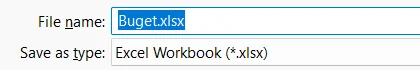

<!doctype html>
<html lang="ro">
<head>
<meta charset="utf-8">
<meta name="viewport" content="width=device-width, initial-scale=1, viewport-fit=cover">
<title>Antrenament: Excel</title>
<meta name="description" content="Antrenament pentru clasa a VIII-a: întrebări trase la întâmplare despre calculul tabelar, cu formule adevărate, pe trei runde (De bază, Consolidat, Avansat), altele la fiecare reluare.">
<link rel="preconnect" href="https://fonts.googleapis.com">
<link rel="preconnect" href="https://fonts.gstatic.com" crossorigin>
<link rel="stylesheet" href="https://fonts.googleapis.com/css2?family=Barlow+Condensed:wght@600;700;800&family=Hanken+Grotesk:ital,wght@0,400;0,600;0,700;1,400&family=Overpass+Mono:wght@500;600&display=swap&subset=latin-ext">
<link rel="stylesheet" href="../_motor/motor.css">
<style>
:root{
  --desk:#ECEBE1; --paper:#FFFEF8; --paper2:#F3F1E6; --line:#D6D2BF;
  --ink:#1E2012; --ink2:#5C5F48; --accent:#55620F; --accentInk:#FFFFFF; --sel:#E5EAC4;
  --mark:#FFD6A3; --markInk:#1E2012; --ok:#1D6B3F; --okbg:#E2F0E5; --bad:#B42E22; --badbg:#FAE4E0;
  --fd:"Barlow Condensed","Arial Narrow","Segoe UI",sans-serif; --fb:"Hanken Grotesk","Segoe UI",system-ui,sans-serif; --fm:"Overpass Mono",Consolas,monospace;
}
@media (prefers-color-scheme:dark){:root:not([data-theme="light"]){
  --desk:#12130C; --paper:#1B1C13; --paper2:#25271B; --line:#3A3C2A;
  --ink:#EEEEDD; --ink2:#B3B49A; --accent:#C4D768; --accentInk:#14160A; --sel:#3A421A;
  --mark:#EDB573; --markInk:#1B1C13; --ok:#7FCB95; --okbg:#17301F; --bad:#FF8A7A; --badbg:#3B1D18;
}}
:root[data-theme="dark"]{
  --desk:#12130C; --paper:#1B1C13; --paper2:#25271B; --line:#3A3C2A;
  --ink:#EEEEDD; --ink2:#B3B49A; --accent:#C4D768; --accentInk:#14160A; --sel:#3A421A;
  --mark:#EDB573; --markInk:#1B1C13; --ok:#7FCB95; --okbg:#17301F; --bad:#FF8A7A; --badbg:#3B1D18;
}
/* tema: bonul fiscal pus pe foaia de calcul. Fâșia de sus = capul de coloane A…H tipărit ca pe bon (mono, punctat),
   cu marginea ruptă în zigzag a hârtiei termice; titlul e îngust și înalt, ca literele de pe casa de marcat */
.banda{position:relative;display:grid;grid-template-columns:repeat(8,1fr);min-height:26px;padding-bottom:6px;font-family:var(--fm);font-size:.66rem;letter-spacing:.08em;color:var(--ink2);border-bottom:0;
  background:
    linear-gradient(135deg,var(--desk) 4px,transparent 0) 0 100%/10px 6px repeat-x,
    linear-gradient(225deg,var(--desk) 4px,transparent 0) 0 100%/10px 6px repeat-x,
    var(--paper2)}
.banda span{display:flex;align-items:center;justify-content:center;border-left:1px dotted var(--line)}
.banda span:first-child{border-left:0}
.banda span.t{color:var(--accent);font-weight:600}
h1,h2{font-weight:800;letter-spacing:.01em}
h1 em{font-style:normal;color:var(--accent);border-bottom:.12em dashed var(--mark)}
</style>
</head>
<body>
<script src="../_motor/motor.js"></script>
<script src="../_motor/tip-foaie.js"></script>
<script>
/* COPIE din jocuri/excel-viii (15.09.2026), fără schimbări de comportament.
   Tipul de întrebare „formatare”: un tabel brut, pe care elevul îl formatează ca în Excel.
   Gestul: întâi selectezi (clic pe un colț, apoi pe colțul opus; sau clic pe litera coloanei / numărul rândului), apoi apeși butonul.
   Întrebare: {t:'formatare', q, cells:{A1:'Elev',B2:9,...}, cols, rows, targets:{umplere:'A1:C1', centru:'B2:C4', borduri:'A1:C4'}, why}
   Verificare pe comportament: pentru fiecare formatare, mulțimea celulelor formatate trebuie să fie EXACT zona cerută. */
const JocFormatare=(function(){
  const L=i=>String.fromCharCode(65+i);
  const NUME={umplere:'culoarea de umplere',centru:'alinierea la centru',borduri:'bordurile'};
  const BTN=[['centru','Aliniere la centru'],['borduri','Borduri'],['umplere','Culoare de umplere'],['sterge','Fără formatare']];
  const CSS=`.fmt-bar{display:flex;flex-wrap:wrap;gap:6px;margin-bottom:6px}
.fmt-bar button{font-size:.86rem;padding:6px 10px;border:1px solid var(--line);border-radius:6px;background:var(--paper2);color:var(--ink)}
.fmt-bar button[data-f="sterge"]{background:transparent;color:var(--ink2)}
.g.fmt th>button{display:block;width:100%;border:0;background:none;color:inherit;font:inherit;padding:4px 2px;min-height:28px}
.g.fmt td>button{text-align:left}
.g.fmt td.c-centru>button{text-align:center}
.g.fmt td.c-num:not(.c-centru)>button{text-align:right}
.g.fmt td.c-umplere>button{background:color-mix(in srgb,var(--accent) 26%,transparent)}
.g.fmt td.c-borduri{border:2px solid var(--ink)}
.g.fmt td.c-sel>button{box-shadow:inset 0 0 0 2px var(--accent)}
.fmt-sel{margin:0 0 6px}`;
  function render(Q,body,api){
    if(!document.getElementById('tip-formatare-css')){const st=document.createElement('style');st.id='tip-formatare-css';st.textContent=CSS;document.head.appendChild(st)}
    const S={umplere:new Set(),centru:new Set(),borduri:new Set()};let a=null,b=null;
    const sel=()=>!a?[]:(b?api.expandRange(a,b):[a]);
    const selLabel=()=>{const s=sel();return !s.length?'nimic':(s.length===1?s[0]:s[0]+':'+s[s.length-1])};
    function draw(){
      const s=new Set(sel());
      let h=`<div class="fmt-bar" role="group" aria-label="Butoane de formatare">${BTN.map(([k,t])=>`<button type="button" data-f="${k}">${t}</button>`).join('')}</div>
        <p class="hint fmt-sel">Selecția ta: <strong class="code">${selLabel()}</strong></p>
        <div class="gridwrap"><table class="g fmt"><thead><tr><th></th>`;
      for(let c=0;c<Q.cols;c++)h+=`<th><button type="button" data-col="${L(c)}" aria-label="Selectează coloana ${L(c)}">${L(c)}</button></th>`;
      h+='</tr></thead><tbody>';
      for(let r=1;r<=Q.rows;r++){
        h+=`<tr><th><button type="button" data-row="${r}" aria-label="Selectează rândul ${r}">${r}</button></th>`;
        for(let c=0;c<Q.cols;c++){const ad=L(c)+r,v=Q.cells[ad];
          const cls=['umplere','centru','borduri'].filter(k=>S[k].has(ad)).map(k=>'c-'+k).concat(typeof v==='number'?['c-num']:[],s.has(ad)?['c-sel']:[]).join(' ');
          h+=`<td class="${cls}"><button type="button" data-a="${ad}" aria-label="Celula ${ad}">${api.esc(v==null?'':String(v))}</button></td>`}
        h+='</tr>'}
      body.innerHTML=h+`</tbody></table></div>
        <p class="hint" style="margin:6px 0 0">Primul clic = un colț, al doilea = colțul opus. Clic pe literă sau pe număr = toată coloana sau tot rândul. Apoi apasă butonul formatării.</p>`;
      body.querySelectorAll('.g td>button').forEach(x=>x.onclick=()=>{if(api.done())return;const ad=x.dataset.a;if(!a||b){a=ad;b=null}else b=ad;draw()});
      body.querySelectorAll('.g th>button[data-col]').forEach(x=>x.onclick=()=>{if(api.done())return;a=x.dataset.col+'1';b=x.dataset.col+Q.rows;draw()});
      body.querySelectorAll('.g th>button[data-row]').forEach(x=>x.onclick=()=>{if(api.done())return;a='A'+x.dataset.row;b=L(Q.cols-1)+x.dataset.row;draw()});
      body.querySelectorAll('.fmt-bar button').forEach(x=>x.onclick=()=>{if(api.done())return;const f=x.dataset.f,cur=sel();
        if(!cur.length){api.feedback('bad','Întâi selectezi celulele, apoi apeși butonul.');return}
        if(f==='sterge')Object.values(S).forEach(set=>cur.forEach(c=>set.delete(c)));else cur.forEach(c=>S[f].add(c));
        draw()});
    }
    function problems(){
      const out=[];
      for(const [k,zona] of Object.entries(Q.targets)){
        const [p,q]=zona.split(':'),want=new Set(api.expandRange(p,q||p));
        const lipsa=[...want].filter(c=>!S[k].has(c)),extra=[...S[k]].filter(c=>!want.has(c));
        if(lipsa.length)out.push(`Zona ${zona} nu are peste tot ${NUME[k]} (lipsește de exemplu în ${lipsa[0]}).`);
        else if(extra.length)out.push(`Ai pus ${NUME[k]} și în afara zonei ${zona} (de exemplu în ${extra[0]}). Selectează doar ce se cere.`);
      }
      return out;
    }
    draw();
    const nav=api.checkButton(()=>{
      const pr=problems();
      if(!pr.length){nav.innerHTML='';api.resolve(true)}
      else{api.resolve(false,api.esc(pr.slice(0,2).join(' '))+(pr.length>2?` (încă ${pr.length-2})`:''));
        api.revealButton(()=>{Object.keys(S).forEach(k=>S[k].clear());for(const [k,z] of Object.entries(Q.targets)){const [p,q]=z.split(':');api.expandRange(p,q||p).forEach(c=>S[k].add(c))}a=b=null;draw();nav.innerHTML='';api.giveUp('formatarea corectă e acum în tabel. Uită-te ce zonă are fiecare formatare.')})}
    });
  }
  function aplica(body,zona,f){
    const [p,q]=zona.split(':');
    body.querySelector(`.g td>button[data-a="${p}"]`).click();
    body.querySelector(`.g td>button[data-a="${q||p}"]`).click();
    body.querySelector(`.fmt-bar button[data-f="${f}"]`).click();
  }
  function rezolva(Q,body){for(const [k,z] of Object.entries(Q.targets))aplica(body,z,k)}
  /* greșeala tipică: formatezi tot tabelul dintr-o dată (umplere peste tot, borduri peste tot) și uiți alinierea */
  function gresit(Q,body){const tot='A1:'+L(Q.cols-1)+Q.rows;aplica(body,tot,'umplere');aplica(body,tot,'borduri')}
  return {render,rezolva,gresit};
})();

/* Acoperirea programei (OMEN 3393/2017, domeniul „Calcul tabelar”), textul EXACT din curriculum.json. */
const P={
  interfata:'Elemente de interfaţă ale unei aplicaţii de calcul tabelar',
  structura:'Structura unui registru de calcul (foaie de calcul, coloană, rând, celulă, adresă de celulă)',
  registru:'Operații cu un registru de calcul (deschidere, închidere, salvare, creare)',
  foi:'Operații cu foi de calcul (accesare, redenumire)',
  editare:'Operaţii de editare (selectare, copiere, mutare, ştergere)',
  randuri:'Operații de formatare a rândurilor/coloanelor',
  celule:'Operații de formatare a celulelor (aliniere conținut, borduri, culori de umplere, stiluri predefinite)',
  tipuri:'Tipuri de date: numeric, text, dată calendaristică',
  sortare:'Sortarea crescătoare/descrescătoare a datelor dintr-un tabel după unul sau mai multe criterii',
  formule:'Formule de calcul care utilizează operatori aritmetici (+, -,*, /)',
  functii:'Funcții specifice aplicaţiei de calcul tabelar pentru sumă, maxim, minim, medie aritmetică şi decizie',
  grafice:'Grafice: tipuri de grafice',
  serii:'Serii de date'
};

/* ---------------- Runda 1: De bază ----------------
   Descriptorul (CS.1.1 / CS.3.1): cu sprijin, elemente de bază de conținut (date de tipuri implicite, formule cu operatori
   aritmetici), editare și formatări de bază, pași ghidați, contexte familiare. Aici: recunoaștere, o idee pe întrebare,
   formula simplă cu cerința scrisă pas cu pas. Lecțiile 2–7. */
const BAZA=[
 /* lecția 2: interfața și structura */
 {t:'choice',lectii:[2],q:'În celula E2 se vede 8,5. Vrei să afli dacă numărul a fost scris de mână sau a ieșit dintr-un calcul. Unde te uiți după ce dai clic pe E2?',
  o:['În bara de formule','În caseta de nume','Pe fila foii, jos','Pe fila Inserare'],ok:0,
  why:'Celula arată doar rezultatul. Bara de formule arată ce e scris de fapt în ea: un număr simplu sau o formulă care începe cu =. Caseta de nume ar arăta doar adresa, E2.'},
 {t:'pick',lectii:[2],q:'Lista de cumpărături pentru ziua clasei. Apasă pe celula care spune câte pahare se cumpără.',cols:3,rows:5,
  cells:{A1:'Produs',B1:'Bucăți',C1:'Preț/buc.',A2:'Suc',B2:6,C2:7,A3:'Pahare',B3:30,C3:1,A4:'Biscuiți',B4:8,C4:4,A5:'Tort',B5:1,C5:90},
  ans:'B3',why:'Paharele sunt pe rândul 3, iar numărul de bucăți e în coloana B. Celula de la întâlnirea lor e B3. A3 are doar numele produsului, iar C3 are prețul.'},
 {t:'tf',lectii:[2],q:'Celula aflată în coloana F, pe rândul 12, are adresa <code>12F</code>.',ok:false,
  why:'Fals. Adresa începe cu litera coloanei și continuă cu numărul rândului, lipite: F12. Așa o scrii și în formule.'},
 /* lecția 3: registrul și foile */
 {t:'choice',lectii:[3],q:'Registrul „Excursie” are trei foi: Date, Calcule și Grafic. Ești pe foaia Date. Ce combinație de taste te duce pe foaia următoare, Calcule?',
  o:['Ctrl + Page Down','Ctrl + Page Up','Ctrl + Shift + Home','Ctrl + Shift + End'],ok:0,
  why:'Ctrl + Page Down trece la foaia următoare, iar Ctrl + Page Up la cea dinainte, deci de pe prima foaie nu te duce nicăieri. Combinațiile cu Shift rămân în aceeași foaie: întind selecția până la începutul foii sau până la ultima celulă folosită.'},
 {t:'classify',lectii:[3],q:'Lucrezi cu tot registrul (fișierul) sau doar cu o foaie din el?',cats:['Registrul întreg','O singură foaie'],
  items:[['Îl salvezi cu Ctrl + S',0],['Schimbi numele „Foaie1” în „Buget”',1],['Deschizi fișierul de ieri cu Ctrl + O',0],['Treci pe fila „Grafic”, jos',1],['Îl închizi cu Ctrl + W',0],['Adaugi o filă nouă cu butonul +',1]],
  why:'Salvarea, deschiderea și închiderea privesc fișierul întreg, cu toate foile lui. Redenumirea, trecerea pe altă filă și adăugarea unei file lucrează cu o foaie din registru.'},
 {t:'choice',lectii:[3],q:'Registrul „Buget.xlsx” e salvat. Vrei să-l păstrezi neschimbat și să continui lucrul într-o copie numită „Buget_v2.xlsx”. Ce tastă deschide fereastra în care îi dai numele nou?<figure class="captura"><a href="../excel-antrenament-viii/img/salvare-ca-nume.webp" target="_blank"></a><figcaption>Fereastra <b>Salvare ca (Save As)</b>: în caseta <b>Nume fișier (File name)</b> scrii numele nou.</figcaption></figure>',
  o:['F12','Ctrl + S','Ctrl + W','Ctrl + N'],ok:0,
  why:'F12 deschide fereastra Salvare ca, unde alegi alt nume. Ctrl + S salvează peste același fișier, Ctrl + W îl închide, iar Ctrl + N face un registru gol, fără datele tale.'},
 {t:'tf',lectii:[3],q:'În Excel-ul instalat pe calculator ai șters din greșeală foaia „Note”. Apeși Ctrl + Z și foaia revine, cu tot ce era în ea.',ok:false,
  why:'Fals. Foaia ștearsă nu revine cu Ctrl + Z, așa cum arată și lecția despre foi. De aceea verifici ce filă ai selectat înainte să ștergi. Dacă n-ai salvat de atunci, poți închide fără salvare și redeschide ultima variantă salvată. Încearcă o dată pe o foaie de probă, ca să vezi singur.'},
 /* lecția 4: adresa, selectare, copiere, mutare, ștergere */
 {t:'pick',lectii:[4],q:'Tabelul de cheltuieli al excursiei. Selectează doar sumele, fără capul de tabel și fără rândul Total: un clic pe primul colț, altul pe colțul opus.',cols:2,rows:6,range:true,
  cells:{A1:'Cheltuială',B1:'Suma (lei)',A2:'Transport',B2:1800,A3:'Cazare',B3:2400,A4:'Bilete',B4:360,A5:'Masa',B5:1440,A6:'Total',B6:6000},
  ans:'B2:B5',why:'Sumele cheltuielilor sunt de la B2 până la B5. B1 e capul de tabel, iar B6 e totalul, care se calculează din ele.'},
 {t:'order',lectii:[4],q:'Coloana cu prețuri stă în B1:B6, dar trebuie mutată în D1:D6. Cum lucrezi?',
  items:['Selectezi B1:B6','Apeși Ctrl + X','Dai clic pe D1','Apeși Ctrl + V'],
  why:'Întâi alegi ce muți. Ctrl + X îl pregătește pentru mutare, clicul pe D1 arată unde ajunge colțul de sus, iar Ctrl + V îl așază. Coloana B rămâne goală, fiindcă ai mutat, nu ai copiat.'},
 /* lecția 5: tipuri de date */
 {t:'choice',lectii:[5],q:'În coloana cu sume cineva a scris <code>5 lei</code> într-o celulă. Suma coloanei nu ține cont de ea. De ce?',
  o:['„5 lei” are litere, deci e text','Numărul 5 e prea mic pentru o sumă','Celula nu are borduri în jurul ei','Coloana e prea îngustă pentru 5'],ok:0,
  why:'Cu literele „lei” lipite de el, 5 devine text, iar funcțiile de calcul sar peste text. Scrii doar 5, iar unitatea o treci în capul de tabel: „Suma (lei)”.'},
 {t:'tf',lectii:[5],q:'Pe un calculator setat în română scrii <code>15.09.2026</code>, iar valoarea se așază singură la dreapta celulei. E semn că Excel a recunoscut o dată calendaristică.',ok:true,
  why:'Adevărat. Datele recunoscute se aliniază la dreapta, ca numerele, fiindcă Excel poate calcula cu ele. Dacă data stă la stânga, a fost luată drept text: pe unele setări, de exemplu engleza americană, se scrie întâi luna.'},
 {t:'choice',lectii:[5],q:'Scrii numărul de telefon <code>0741234567</code>, dar în celulă apare <code>741234567</code>. Cum păstrezi zeroul din față?',
  o:['Formatezi celula ca Text înainte să scrii','Scrii din nou numărul, cu litere mai mari','Faci coloana mai lată, ca să încapă tot','Pui borduri groase în jurul acelei celule'],ok:0,
  why:'Excel vede cifrele ca număr, iar la un număr zeroul din față nu contează, așa că îl scoate. Ca text, șirul rămâne exact cum l-ai scris. Merge și un apostrof pus în față: \'0741234567.'},
 /* lecția 6: formatare */
 {t:'formatare',lectii:[6],q:'Cheltuielile excursiei, pregătite pentru avizier. Pas cu pas: 1) selectează <strong>A6:B6</strong> și apasă <strong>Culoare de umplere</strong>; 2) selectează <strong>B2:B6</strong> și apasă <strong>Aliniere la centru</strong>; 3) selectează <strong>A1:B6</strong> și apasă <strong>Borduri</strong>.',
  cells:{A1:'Cheltuială',B1:'Suma (lei)',A2:'Transport',B2:1800,A3:'Cazare',B3:2400,A4:'Bilete',B4:360,A5:'Masa',B5:1440,A6:'Total',B6:6000},
  cols:2,rows:6,targets:{umplere:'A6:B6',centru:'B2:B6',borduri:'A1:B6'},
  why:'Fiecare pas are zona lui: fundalul colorat scoate în evidență totalul, centrarea așază sumele, iar bordurile se văd și pe foaia tipărită.'},
 {t:'choice',lectii:[6],q:'Din Word știi că Ctrl + E centrează textul. În Excel selectezi titlul și apeși Ctrl + E. Ce se întâmplă?',
  o:['Pornește Umplere instant, nu centrarea','Titlul se centrează, exact ca în Word','Titlul devine aldin și mai mare','Registrul se închide fără salvare'],ok:0,
  why:'În Excel, Ctrl + E pornește Umplere instant, o completare automată. Nu toate scurtăturile din Word merg la fel în Excel. Centrezi cu butonul de aliniere de pe fila Pornire; dacă ai apăsat din greșeală, anulezi cu Ctrl + Z.'},
 /* lecția 7: formule */
 {t:'foaie',lectii:[7],q:'La fizică, viteza = distanța : timpul. În D2 scrie <code>=B2/C2</code> și apasă Enter. Apoi scrie la fel pentru rândurile 3 și 4 (D3 și D4), cu adresele rândului lor.',
  cells:{A1:'Cine',B1:'Distanța (m)',C1:'Timpul (s)',D1:'Viteza (m/s)',A2:'Biciclist',B2:600,C2:60,A3:'Alergător',B3:200,C3:40,A4:'Melc',B4:3,C4:60},
  cols:4,rows:4,targets:{D2:'=B2/C2',D3:'=B3/C3',D4:'=B4/C4'},
  variants:[{B2:450,C2:50,B3:180,C3:30,B4:6,C4:120}],
  why:'Împărțirea se scrie cu bara /. Cu adrese, viteza se recalculează singură dacă schimbi distanța sau timpul. Jocul a verificat formulele și pe alte numere.'},
 {t:'choice',lectii:[7],q:'Nota de la teză e în B2, nota de la oral în C2. Care formulă calculează media celor două note?',
  o:['=(B2+C2)/2','=B2+C2/2','=(B2+C2):2','=B2+C2÷2'],ok:0,
  why:'Parantezele fac întâi adunarea, apoi împărțirea. Fără ele, doar C2 s-ar împărți la 2. Semnele „:” și „÷” nu împart în Excel: împărțirea se scrie cu /.'}
];

/* ---------------- Runda 2: Consolidat ----------------
   Descriptorul: independent, mai multe elemente de conținut, editare și formatări de bază, contexte familiare.
   Aici: funcții și formatări alese singur, fără pașii scriși. Lecțiile 4–11. */
const CONSOLIDAT=[
 {t:'choice',lectii:[4],q:'Vrei să colorezi în același timp coloanele B și D, fără coloana C dintre ele. Cum le selectezi?',
  o:['Clic pe litera B, apoi Ctrl apăsat și clic pe litera D','Clic pe litera B, apoi Shift apăsat și clic pe litera D','Tragi cu mouse-ul de la litera B până la litera D','Dublu-clic pe litera B, apoi dublu-clic pe litera D'],ok:0,
  why:'Cu Ctrl apăsat adaugi la selecție zone care nu se ating. Shift și tragerea selectează tot ce e între B și D, deci și C. Dublu-clicul pe literă nu adaugă nimic la selecție.'},
 {t:'tf',lectii:[4],q:'Zona B2:B6 are borduri și fundal galben. O selectezi și apeși Delete. Numerele dispar, iar bordurile și fundalul dispar odată cu ele.',ok:false,
  why:'Fals. Delete golește doar conținutul. Bordurile și fundalul rămân, gata pentru numerele noi pe care le scrii acolo.'},
 {t:'choice',lectii:[5],q:'Pe un calculator setat în română scrii fiecare valoare în altă celulă, fără nicio formatare. Care dintre ele rămâne lipită de marginea din stânga?',
  o:['8B','3,5','-20','12.10.2026'],ok:0,
  why:'„8B” are o literă, deci e text, iar textul stă la stânga. Numărul zecimal 3,5, numărul negativ -20 și data 12.10.2026 sunt valori cu care Excel calculează, așa că stau la dreapta.'},
 {t:'choice',lectii:[5],q:'În A2 e data 10.09.2026, iar în B2 data 25.09.2026. În C2 scrii <code>=B2-A2</code>. Ce număr îți dă?',
  o:['15','35','25.09.2026','o eroare'],ok:0,
  why:'Excel ține fiecare dată ca pe un număr de zile, deci diferența a două date e numărul de zile dintre ele: de la 10 la 25 septembrie sunt 15 zile. Dacă rezultatul apare tot ca dată, schimbi formatul celulei în număr.'},
 {t:'formatare',lectii:[6],q:'Clasamentul concursului merge la avizier. Capul de tabel trebuie să iasă în evidență cu un fundal colorat, toate punctajele stau la mijlocul celulei, iar tabelul are linii care se văd și pe hârtie. Alege singur zonele.',
  cells:{A1:'Echipa',B1:'Proba 1',C1:'Proba 2',D1:'Total',A2:'Vulturii',B2:40,C2:45,D2:85,A3:'Delfinii',B3:38,C3:50,D3:88,A4:'Lupii',B4:42,C4:39,D4:81},
  cols:4,rows:4,targets:{umplere:'A1:D1',centru:'B2:D4',borduri:'A1:D4'},
  why:'Capul de tabel e rândul 1 (A1:D1). Punctajele sunt toate numerele, B2:D4, inclusiv totalul. Liniile care se tipăresc sunt bordurile, puse pe tot tabelul, A1:D4.'},
 {t:'choice',lectii:[6],q:'Coloana Media arată <code>8,333333</code>. Vrei să se vadă <code>8,33</code>, dar Excel să calculeze mai departe cu valoarea întreagă. Ce faci?',
  o:['Micșorezi zecimalele afișate, de pe fila Pornire','Scrii de mână 8,33 peste rezultatul formulei','Ștergi cu Backspace ultimele cifre din celulă','Pui media într-o celulă cu bordură mai groasă'],ok:0,
  why:'Formatul de număr schimbă doar ce se vede, nu valoarea. Dacă scrii 8,33 de mână, pierzi formula, iar rezultatul nu se mai recalculează când se schimbă notele.'},
 {t:'tf',lectii:[6],q:'Scrii un nume lung într-o coloană îngustă, iar coloana din dreapta are deja date. Numele se vede tăiat, deci literele care nu se văd s-au pierdut.',ok:false,
  why:'Fals. Textul rămâne întreg în celulă, îl vezi în bara de formule. Doar afișarea e tăiată. Lărgești coloana și numele apare tot.'},
 {t:'choice',lectii:[6],q:'Vrei ca B, C și D să fie la fel de late, dintr-o singură mișcare. Cum procedezi?',
  o:['Selectezi literele B–D, apoi tragi marginea uneia','Tragi pe rând marginea fiecărei coloane, după ochi','Dai dublu-clic pe celula B1, apoi pe C1 și pe D1','Schimbi mărimea fontului în toate cele trei coloane'],ok:0,
  why:'Când mai multe coloane sunt selectate, lățimea pe care o dai uneia se aplică tuturor. Trase pe rând, după ochi, ies aproape mereu puțin diferite.'},
 {t:'foaie',lectii:[7],q:'Factura de la papetărie are prețurile fără TVA. Calculează TVA-ul fiecărui produs (coloana D) și prețul cu TVA (coloana E). Cota e în procente, în coloana C.',
  cells:{A1:'Produs',B1:'Preț fără TVA',C1:'Cota TVA (%)',D1:'TVA (lei)',E1:'Preț cu TVA',A2:'Caiet',B2:10,C2:21,A3:'Lapte',B3:5,C3:11,A4:'Pix',B4:4,C4:21},
  cols:5,rows:4,targets:{D2:'=B2*C2/100',D3:'=B3*C3/100',D4:'=B4*C4/100',E2:'=B2+D2',E3:'=B3+D3',E4:'=B4+D4'},
  why:'21% din 10 lei înseamnă 10 × 21 : 100 = 2,10 lei, iar prețul cu TVA e 10 + 2,10 = 12,10 lei. Cota se ia din rândul fiecărui produs, fiindcă produsele pot avea cote diferite.'},
 {t:'choice',lectii:[7],q:'Un joc costă cât scrie în B2, dar azi are reducere de 10%. Care formulă dă prețul de plătit după reducere?',
  o:['=B2-B2*10/100','=B2*10/100','=(B2-B2)*10/100','=B2-10/100'],ok:0,
  why:'Reducerea e B2 × 10 : 100, iar prețul nou e prețul vechi minus reducerea. =B2*10/100 dă doar reducerea, (B2-B2) face 0, iar =B2-10/100 scade doar 0,10 lei.'},
 {t:'foaie',lectii:[8],q:'Geografie: temperaturile de la prânz dintr-o săptămână. Cu funcții, află cea mai ridicată temperatură (B9), cea mai scăzută (B10), diferența dintre ele (B11) și media săptămânii (B12).',
  cells:{A1:'Ziua',B1:'Temperatura (°C)',A2:'Luni',B2:14,A3:'Marți',B3:17,A4:'Miercuri',B4:21,A5:'Joi',B5:19,A6:'Vineri',B6:12,A7:'Sâmbătă',B7:9,A8:'Duminică',B8:16,A9:'Cea mai ridicată',A10:'Cea mai scăzută',A11:'Diferența',A12:'Media'},
  cols:2,rows:12,targets:{B9:'=MAX(B2:B8)',B10:'=MIN(B2:B8)',B11:'=B9-B10',B12:'=AVERAGE(B2:B8)'},
  variants:[{B2:30,B8:-3},{B2:-3,B8:30}],
  why:'MAX și MIN caută în toată zona B2:B8. Diferența o calculezi din cele două rezultate, B9 − B10 = 21 − 9 = 12 grade. Media e 108 : 7, adică aproximativ 15,43.'},
 {t:'choice',lectii:[8],q:'Notele din B2:B4 sunt 9, 6 și 9. Una dintre formulele de mai jos NU calculează media lor. Care?',
  o:['=B2+B3+B4/3','=AVERAGE(B2:B4)','=(B2+B3+B4)/3','=SUM(B2:B4)/3'],ok:0,
  why:'În =B2+B3+B4/3 se împarte doar B4, fiindcă împărțirea se face înaintea adunării: 9 + 6 + 3 = 18, nu 8. Celelalte trei dau 24 : 3 = 8.'},
 {t:'tf',lectii:[8],q:'Formula <code>=MAX(B2:B30)</code> scrie în celulă numele elevului care are cea mai mare notă.',ok:false,
  why:'Fals. MAX întoarce cea mai mare valoare din zonă, adică nota, nu numele. Numele îl găsești, de exemplu, sortând tabelul descrescător după notă.'},
 {t:'foaie',lectii:[9],q:'Banii de buzunar: în coloana D scrie cu IF „în buget” dacă suma cheltuită nu trece de buget, altfel „depășit”.',
  cells:{A1:'Luna',B1:'Cheltuit',C1:'Buget',D1:'Situația',A2:'Septembrie',B2:180,C2:200,A3:'Octombrie',B3:230,C3:200,A4:'Noiembrie',B4:200,C4:200},
  cols:4,rows:4,targets:{D2:'=IF(B2<=C2;"în buget";"depășit")',D3:'=IF(B3<=C3;"în buget";"depășit")',D4:'=IF(B4<=C4;"în buget";"depășit")'},
  variants:[{B2:201,C2:200,B3:150,C3:200,B4:199,C4:200},{B2:50,C2:50,B3:51,C3:50,B4:0,C4:10},{B2:150,C2:120,B3:90,C3:100,B4:250,C4:300}],
  why:'„Nu trece de buget” înseamnă cel mult cât bugetul, deci comparația e <=. În noiembrie a cheltuit fix 200 din 200 și e tot „în buget”. Cu < în loc de <=, luna aceasta ar ieși greșit.'},
 {t:'choice',lectii:[9],q:'Atât în B2, cât și în C2 scrie 50. Ce afișează <code>=IF(B2&gt;C2;"câștig";"pierdere")</code>?',
  o:['pierdere','câștig','50','nimic, dă eroare'],ok:0,
  why:'50 nu e mai mare decât 50, deci condiția e falsă și IF alege a doua variantă. La valorile egale se vede dacă ai ales bine între &gt; și &gt;=.'},
 {t:'choice',lectii:[9],q:'Regula clubului: intri în echipă de la nota 7 în sus. Care formulă o respectă?',
  o:['=IF(B2>=7;"admis";"respins")','=IF(B2>7;"admis";"respins")','=IF(B2=>7;"admis";"respins")','=IF(B2<=7;"admis";"respins")'],ok:0,
  why:'„De la 7 în sus” include nota 7, deci comparația e >=. Cu > elevul cu 7 ar fi respins. Semnul => nu există în Excel, iar <= ar admite notele mici.'},
 {t:'choice',lectii:[10],q:'Vrei lista elevilor în ordine alfabetică după nume. În fereastra Sortare, la coloana Nume, ce alegi la Ordine?',
  o:['De la A la Z','De la Z la A','De la cel mai mic la cel mai mare','De la cel mai mare la cel mai mic'],ok:0,
  why:'Numele sunt text, deci ordinea e cu litere: de la A la Z e alfabetic. Variantele „de la cel mai mic la cel mai mare” apar când sortezi numere.'},
 {t:'choice',lectii:[10],q:'Butoanele A→Z și Z→A ordonează după o singură coloană. Pentru două criterii îți trebuie fereastra în care apare „Adăugare nivel”. Cum ajungi la ea?<figure class="captura"><a href="../excel-viii/img/sortare-doua-criterii.webp" target="_blank"></a><figcaption>Fereastra <b>Sortare (Sort)</b>, cu butonul <b>Adăugare nivel (Add Level)</b>.</figcaption></figure>',
  o:['Clic în tabel, apoi fila Date → Sortare','Clic în tabel, apoi fila Inserare → Tabel','Clic dreapta pe fila foii → Redenumire','Clic în tabel, apoi fila Formule → Sumă'],ok:0,
  why:'Fereastra Sortare se deschide de pe fila Date. În ea, Adăugare nivel pune al doilea criteriu, care ordonează rândurile rămase la egalitate după primul.'},
 {t:'choice',lectii:[11],q:'Vrei să compari cât s-a cheltuit pe transport, cazare, bilete și masă. Ce tip de grafic alegi?',
  o:['Coloane','Linie','Radial','Niciun grafic, doar tabelul'],ok:0,
  why:'Coloanele se compară dintr-o privire: cea mai înaltă e cea mai mare cheltuială. Linia e pentru o evoluție în timp, iar radialul pentru părțile unui întreg.'},
 {t:'pick',lectii:[11],q:'Graficul temperaturilor are o singură serie de date. Selectează seria cu tot cu numele ei din capul de tabel, ca numele să apară în legendă.',cols:2,rows:8,range:true,
  cells:{A1:'Ziua',B1:'Temperatura',A2:'Luni',B2:14,A3:'Marți',B3:17,A4:'Miercuri',B4:21,A5:'Joi',B5:19,A6:'Vineri',B6:12,A7:'Sâmbătă',B7:9,A8:'Duminică',B8:16},
  ans:'B1:B8',why:'Seria e coloana de valori B2:B8. Cu B1 inclus, Excel ia de acolo numele seriei, „Temperatura”. Zilele din coloana A sunt categoriile de pe axa orizontală, nu o serie.'},
 {t:'match',lectii:[11],q:'Graficul cheltuielilor e gata. Leagă fiecare parte a lui de ce arată.',
  pairs:[['Titlul graficului','despre ce e tot desenul'],['Legenda','ce serie are fiecare culoare'],['Axa orizontală','categoriile, de exemplu transport, cazare'],['Axa verticală','scara valorilor, în lei']],
  why:'Titlul spune subiectul, legenda leagă culorile de serii, iar cele două axe arată categoriile și mărimea valorilor. Fără ele graficul se citește greu.'},
 {t:'tf',lectii:[11],q:'Ai făcut graficul din tabelul notelor. După aceea observi o notă greșită și o corectezi în tabel. Coloana ei din grafic se schimbă și ea, fără să refaci graficul.',ok:true,
  why:'Adevărat. Graficul e legat de celulele din care l-ai făcut, deci urmează orice schimbare din ele. Nu trebuie refăcut, doar verificat.'}
];

/* ---------------- Runda 3: Avansat (finală) ----------------
   Descriptorul: independent, elemente diverse, sortări, conform specificațiilor, reguli de structurare și design, contexte noi.
   Aici: IF cu praguri, TVA din bonul cu TVA inclus, sortare pe mai multe criterii, graficul ales după public,
   greșeli găsite în formulele altcuiva. Lecțiile 7–13 (12 = mini-proiectul, 13 = proba practică de evaluare). */
const AVANSAT=[
 {t:'foaie',lectii:[9],q:'Concursul de informatică: de la 85 de puncte în sus se dă „premiu”, de la 60 la 84 „mențiune”, sub 60 „participare”. Scrie în C2, C3 și C4 rezultatul, cu un IF pus în alt IF.',
  cells:{A1:'Elev',B1:'Punctaj',C1:'Rezultat',A2:'Elev 1',B2:92,A3:'Elev 2',B3:71,A4:'Elev 3',B4:45},
  cols:3,rows:4,targets:{C2:'=IF(B2>=85;"premiu";IF(B2>=60;"mențiune";"participare"))',C3:'=IF(B3>=85;"premiu";IF(B3>=60;"mențiune";"participare"))',C4:'=IF(B4>=85;"premiu";IF(B4>=60;"mențiune";"participare"))'},
  variants:[{B2:85,B3:84,B4:60},{B2:59,B3:60,B4:100},{B2:0,B3:86,B4:84}],
  why:'Primul IF oprește punctajele de 85 și peste. Al doilea IF primește doar ce a rămas și desparte „mențiune” de „participare”. Jocul a încercat și pragurile fixe: 85, 84, 60, 59.'},
 {t:'foaie',lectii:[7],q:'Pe bonul fiscal prețurile au TVA-ul inclus. Pentru fiecare produs, TVA-ul = preț × cotă : (100 + cotă). Calculează-l în D2, D3 și D4, apoi TVA-ul total în D5.',
  cells:{A1:'Produs',B1:'Preț pe bon',C1:'Cota TVA (%)',D1:'TVA (lei)',A2:'Caiet',B2:12.1,C2:21,A3:'Lapte',B3:5.55,C3:11,A4:'Pix',B4:4.84,C4:21,A5:'Total TVA'},
  cols:4,rows:5,targets:{D2:'=B2*C2/(100+C2)',D3:'=B3*C3/(100+C3)',D4:'=B4*C4/(100+C4)',D5:'=SUM(D2:D4)'},
  why:'Prețul de pe bon e 100% + cota. La caiet, 12,10 lei = 121%, iar TVA-ul e 12,10 × 21 : 121 = 2,10 lei. Fără paranteze la (100+C2) calculul ar ieși greșit. Totalul e 2,10 + 0,55 + 0,84 = 3,49 lei.'},
 {t:'choice',lectii:[8],q:'În B2:B5 sunt notele 9, 7 și 5, iar a patra notă, 3, a fost scrisă ca text. Ce afișează <code>=AVERAGE(B2:B5)</code>?',
  o:['7','6','5','o eroare'],ok:0,
  why:'AVERAGE sare peste textul din zonă fără niciun avertisment, deci face (9 + 7 + 5) : 3 = 7. Cu 3 ca număr, media ar fi fost 24 : 4 = 6. De aceea verifici că numerele stau la dreapta celulei.'},
 {t:'choice',lectii:[8],q:'Catalogul la sport: în B2:B6 sunt notele 9, 7, 10 și 8, iar la un elev absent celula a rămas goală. Ce afișează <code>=MIN(B2:B6)</code>?',
  o:['7','0','8','o eroare'],ok:0,
  why:'MIN ia în seamă doar celulele cu numere, iar celula goală nu e socotită 0. Cea mai mică notă rămâne 7. Dacă ai fi scris 0 pentru absent, minimul ar fi ieșit 0, deși nu e o notă.'},
 {t:'foaie',lectii:[7],q:'Excursia cu mașina: consumul se socotește în litri la 100 km, adică litri : kilometri × 100. Calculează-l în D2, D3 și D4.',
  cells:{A1:'Traseu',B1:'Kilometri',C1:'Litri',D1:'Litri la 100 km',A2:'Traseul 1',B2:130,C2:9.1,A3:'Traseul 2',B3:60,C3:3.6,A4:'Traseul 3',B4:250,C4:20},
  cols:4,rows:4,targets:{D2:'=C2/B2*100',D3:'=C3/B3*100',D4:'=C4/B4*100'},
  why:'La primul traseu: 9,1 : 130 × 100 = 7 litri la 100 km. Merge și =C2*100/B2: jocul verifică rezultatul pe mai multe seturi de numere, nu forma formulei.'},
 {t:'order',lectii:[10],q:'Clasamentul concursului e sortat după Punctaj, de la cel mai mare la cel mai mic, apoi după Timp, de la cel mai mic la cel mai mare. Pune rândurile în ordinea care iese.',
  items:['Sara · 95 puncte · 15 min','Vlad · 95 puncte · 18 min','Irina · 88 puncte · 11 min','Toma · 88 puncte · 14 min'],
  why:'Primul criteriu pune sus punctajele de 95. Al doilea contează doar între cei cu punctaj egal: dintre ei vine întâi cine a terminat mai repede.'},
 {t:'choice',lectii:[10],q:'Ai sortat descrescător tabelul cheltuielilor, iar rândul „Total”, lipit de tabel, a ajuns printre cheltuieli. Ce s-a întâmplat?',
  o:['Rândul Total a intrat în sortare, ca un rând de date','Excel sortează mereu și ultimul rând','Formula din Total s-a transformat în text','Sortarea descrescătoare mută totalurile în mijloc'],ok:0,
  why:'Excel ia la sortare tot tabelul lipit de celula aleasă, deci și rândul Total. Anulezi cu Ctrl + Z și lași un rând gol între date și total, sau selectezi doar rândurile de date înainte să sortezi.'},
 {t:'choice',lectii:[11],q:'Pentru avizier compari voturile pentru șase activități cu nume lungi, ca „Vizită la Muzeul de Științe ale Naturii”. Ce grafic se citește cel mai ușor?',
  o:['Bare orizontale, cu numele scrise pe lângă bare','Coloane verticale, cu numele înghesuite dedesubt','Linie care unește voturile activităților','Radial cu șase felii, fără nicio etichetă'],ok:0,
  why:'Tot o comparație e, dar cu bare culcate numele lungi încap pe rând, lângă bara lor. Sub coloane verticale s-ar înghesui sau s-ar scrie oblic. Linia sugerează o evoluție, care aici nu există.'},
 {t:'choice',lectii:[11],q:'Un coleg arată la dirigenție un grafic cu coloane: media clasei 8A e 8,1, a clasei 8B e 7,9. Totuși, coloana lui 8B pare de trei ori mai mică. Ce verifici întâi?',
  o:['De la ce valoare pornește axa verticală','Dacă titlul graficului e scris cu aldin','Dacă legenda stă în dreapta sau jos','Câte foi are registrul colegului'],ok:0,
  why:'Dacă axa pornește de la 7,8 în loc de 0, se desenează doar diferențele: 0,3 față de 0,1, deci „de trei ori”. La un grafic cu coloane e bine ca axa valorilor să pornească de la 0, altfel graficul exagerează diferențele.'},
 {t:'classify',lectii:[12],q:'Mini-proiectul are mai multe cerințe. Ce grafic se potrivește fiecăreia?',cats:['Coloane','Linie','Radial'],
  items:[['temperatura din tabără, zi de zi, o săptămână',1],['voturile pentru cele patru destinații de excursie',0],['din ce e format bugetul: transport, cazare, masă',2],['punctele funcției y = 2x + 1, pentru x de la 0 la 5',1],['numărul de elevi din fiecare clasă a VIII-a',0],['cât din ziua ta merge pe somn, școală și joacă',2]],
  why:'Compari categorii: coloane. Urmărești ceva care se schimbă pe rând, zi după zi sau x după x: linie. Împarți un întreg în bucăți: radial.'},
 {t:'foaie',lectii:[12],q:'Bugetul excursiei: în B6 suma cheltuielilor, în B8 costul pe elev (totalul împărțit la numărul de elevi din B7), iar în B9 „da” dacă un elev plătește cel mult 150 de lei, altfel „nu”.',
  cells:{A1:'Cheltuială',B1:'Lei',A2:'Transport',B2:1800,A3:'Cazare',B3:2400,A4:'Bilete',B4:360,A5:'Masa',B5:1440,A6:'Total',A7:'Elevi',B7:40,A8:'Cost pe elev',A9:'Se poate?'},
  cols:2,rows:9,targets:{B6:'=SUM(B2:B5)',B8:'=B6/B7',B9:'=IF(B8<=150;"da";"nu")'},
  variants:[{B7:39},{B7:41},{B2:1900}],
  why:'Totalul e 6000 de lei, iar 6000 : 40 = 150, fix pragul, deci „da”. Cu 39 de elevi costul ar sări peste 150 și ar ieși „nu”. Formulele legate între ele se recalculează toate când se schimbă o cheltuială.'},
 {t:'hunt',lectii:[13],q:'La proba practică, un coleg a scris formulele de mai jos pentru tabelul bugetului (cheltuielile în B2:B5, totalul în B6, elevii în B7, costul pe elev în B8). Cerința lui B9: „da” dacă B8 e cel mult 150. Găsește cele 4 formule greșite.',
  src:'Total: =SUM(B2:B5) · Cost pe elev: [[=B6:B7|Împărțirea se scrie cu bara: =B6/B7. Cu două puncte ar fi o zonă, nu o împărțire.]] · Cheltuiala cea mai mare: [[=MAXIM(B2:B5)|Numele funcției rămâne în engleză și în Excel-ul în română: =MAX(B2:B5).]] · Media cheltuielilor: =AVERAGE(B2:B5) · Se poate?: [[=IF(B8>150;"da";"nu")|Condiția e întoarsă: „da” trebuie pentru cel mult 150, deci =IF(B8<=150;"da";"nu").]] · Rămân din 7000 de lei: [[7000-B6|Fără = la început Excel păstrează textul așa cum e și nu calculează: =7000-B6.]] · Cheltuiala cea mai mică: =MIN(B2:B5)',
  indiciu:'Citește fiecare formulă cum ar citi-o Excel: ce calculează de fapt și ce cere rândul ei?',
  why:'Greșelile de formă (fără =, două puncte în loc de /, funcție cu nume românesc) se văd repede în celulă: apare textul formulei, o eroare sau un rezultat ciudat. Condiția întoarsă e mai periculoasă: formula merge, dar răspunde invers. O prinzi doar dacă o verifici pe un caz cunoscut.'},
 {t:'choice',lectii:[10],q:'Cărțile bibliotecii se sortează întâi după Autor, de la A la Z. La același autor, cele mai noi cărți trebuie să vină primele. Ce pui la nivelul adăugat pentru al doilea criteriu?',
  o:['An, de la cel mai mare la cel mai mic','An, de la cel mai mic la cel mai mare','Titlu, de la A la Z','Autor, de la Z la A'],ok:0,
  why:'Anul cel mai mare e cartea cea mai nouă, deci ordinea e de la cel mai mare la cel mai mic. Al doilea nivel lucrează doar între cărțile aceluiași autor; Autor Z→A ar strica primul criteriu.'}
];

JocMotor.porneste({
  mod:'antrenament',
  cheie:'joc_excel_antrenament_viii',
  titlu:'Antrenament: Excel',
  marca:'Antrenament: <b>Excel</b>',
  h1:'Antrenament: <em>Excel</em>',
  clasa:'a VIII-a',
  unitate:'VIII-U1',
  unitateTitlu:'Calcul tabelar',
  competente:['CS.1.1','CS.3.1'],
  lectii:'2–13',
  intro:'Antrenament pe toată unitatea de calcul tabelar, în trei runde: De bază, Consolidat și Avansat. Nu ai pagini de citit. Primești câteva întrebări trase la întâmplare dintr-un bazin mai mare, iar în foile din joc scrii formule adevărate, pe care jocul le verifică și pe alte numere. Reia o rundă de câte ori vrei: de fiecare dată vin alte întrebări, pe aceleași lucruri din lecții.',
  banda:'<span>A</span><span>B</span><span class="t">=SUM</span><span>C</span><span>D</span><span class="t">TVA</span><span>E</span><span>F</span>',
  nivele:[
    {t:'De bază',descriptor:'De bază',cate:6,bazin:BAZA,lectii:[2,3,4,5,6,7],
     continuturi:[P.interfata,P.structura,P.registru,P.foi,P.editare,P.celule,P.tipuri,P.formule],
     text:'<p>Adresa unei celule e litera coloanei plus numărul rândului: <code>B3</code>. Numerele și datele stau la dreapta, textul la stânga. O formulă începe cu <code>=</code> și folosește adrese: <code>=B2/C2</code>. Întâi selectezi, apoi formatezi.</p>'},
    {t:'Consolidat',descriptor:'Consolidat',cate:6,bazin:CONSOLIDAT,lectii:[4,5,6,7,8,9,10,11],
     continuturi:[P.editare,P.randuri,P.celule,P.tipuri,P.formule,P.functii,P.sortare,P.grafice,P.serii],
     text:'<p>Funcțiile au nume în engleză: <code>SUM</code>, <code>AVERAGE</code>, <code>MAX</code>, <code>MIN</code>, <code>IF</code>. Între părțile lor pui <code>;</code> sau <code>,</code>, după setările calculatorului. Sortarea cu mai multe criterii se face din fila <strong>Date</strong> → <strong>Sortare</strong>.</p>'},
    {t:'Avansat',descriptor:'Avansat',final:true,cate:5,bazin:AVANSAT,lectii:[7,8,9,10,11,12,13],
     continuturi:[P.formule,P.functii,P.sortare,P.grafice],
     text:'<p>Situații noi, ca la proba practică. Verifică orice decizie pe valoarea fix de la prag. Alege graficul după întrebare și după cine îl privește. Când găsești o formulă greșită, întreabă-te ce ar trebui să răspundă pe un caz pe care îl știi.</p>'}
  ],
  tipuri:{foaie:JocFoaie,formatare:JocFormatare},
  diploma:{
    titlu:'Analist de buget antrenat',
    rezumat:'trei runde de antrenament pe calculul tabelar: registrul și foile, tipurile de date și formatarea, formulele și funcțiile, decizia cu IF, sortarea pe mai multe criterii și graficele alese după public',
    aplicatie:'Excel-ul adevărat',
    provocare:[
      'Creează un registru nou cu două foi, redenumite „Bon” și „Grafic”.',
      'Pe foaia „Bon” copiază un bon de cumpărături real sau inventat, cu cel puțin 5 produse: produsul, prețul de pe bon și cota TVA scrisă pe bon.',
      'Calculează TVA-ul fiecărui produs cu <code>=B2*C2/(100+C2)</code>, apoi TVA-ul total cu SUM și produsul cel mai scump cu MAX.',
      'Adaugă o coloană „Scump?” cu IF: „da” de la 20 de lei în sus, altfel „nu”. Verifică pe un produs de fix 20 de lei.',
      'Sortează produsele după coloana „Scump?”, apoi după preț, de la cel mai mare la cel mai mic, cu Date → Sortare → Adăugare nivel.',
      'Pune fundal pe capul de tabel și borduri pe tot tabelul. Fă un grafic cu coloane al prețurilor, cu titlu, și mută-l pe foaia „Grafic” cu <kbd>Ctrl</kbd>+<kbd>X</kbd> și <kbd>Ctrl</kbd>+<kbd>V</kbd>.',
      'Salvează ca <code>Nume_Prenume_bon.xlsx</code> în folderul clasei.'
    ]
  }
});
</script>
</body>
</html>
